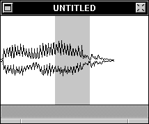
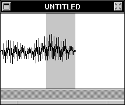

by displaying only the minimum and maximum (peak) amplitudes, creating essentially an outline of the sound. When zoomed in, a sound ignores Min/Max display and shows sound data as individual samples. To change this display format, press here:
Display Formats
A sound window can display the sound in different ways. Some are listed below, showing the word "Hello" as a sound.
Min/Max Display

Min/Max Display shows a sound wave, when it is zoomed out,
by displaying only the minimum and maximum (peak) amplitudes, creating essentially an outline of the sound. When zoomed in, a sound ignores Min/Max display and shows sound data as individual samples. To change this display format, press here: 
Oscilliscopic Display

This is the same sound, displayed with Oscilliscopic Display. Oscilliscopic Display shows a sound wave, when it is zoomed out,
as an oscilliscope would: a series of lines that alternate up and down. When zoomed in, a sound ignores Oscilliscopic display and displays sound data as individual samples. Because of a bug in NeXT's SoundView object, Oscilliscopic display generates PostScript errors and does not display the very end of a sound. I recommend you use Min/Max display instead. To change this display format, press here: